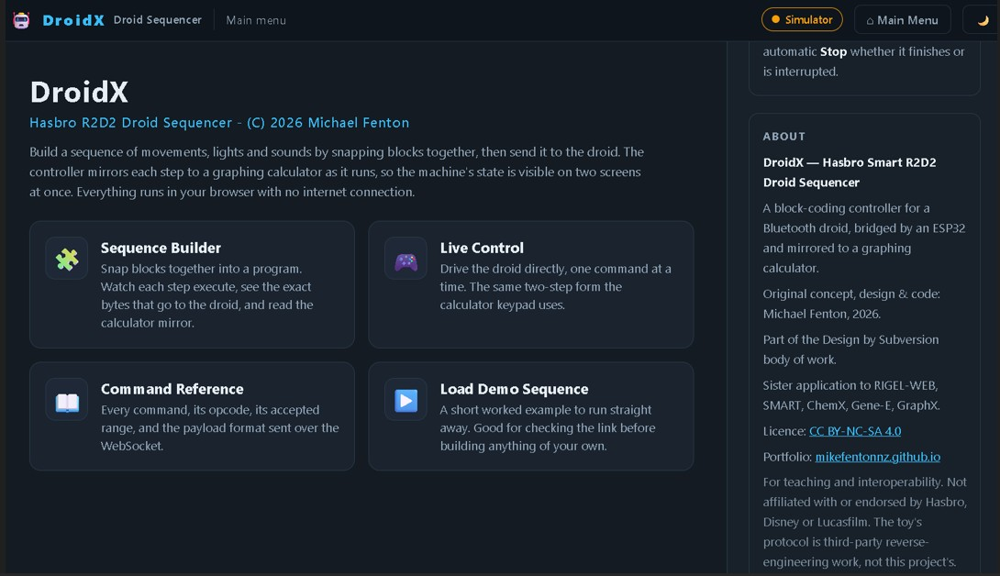

The droid that outlived its app
A graphing calculator, an ESP32, and a toy nobody can switch on any more
← Casio calculator data logger – project overview
Hasbro's Smart R2-D2 was sold in 2016 with an Android app that controlled it over Bluetooth. The app was built with a Unity version of that year and ships only 32-bit native libraries. Modern phones are 64-bit only. The app will not install, so the toy will not move.
Nothing is wrong with the robot. Its motors turn, its lamps light, its speaker works, and it still advertises itself over Bluetooth to anything that knows how to ask. What died was the software, and with it every one of these toys still sitting in a cupboard.
This project puts a Casio FX-9750 graphing calculator in charge of it, through the same 2.5 mm serial port and the same four-component interface circuit as every other build in this family. It then adds DroidX, a block-coding web page served by the ESP32 itself, so a phone or tablet can drive the droid with no app, no install, and no internet connection.
Restore phone control of your Hasbro Smart R2D2 The Casio remains a teaching tool connecting to R2D2 AT THE SAME TIME as the ESP32 serves an app to your phone, tablet or laptop webbrowser.
The calculator sends the commands. The ESP32 translates them into Bluetooth. The droid moves. And the calculator screen shows what the droid is actually doing, read back from the robot rather than assumed.

Why bother
This is an e-waste problem wearing a toy costume. A working machine is unusable because a company stopped maintaining a phone app, and no amount of care by the owner can fix that. Learners meet planned and unplanned obsolescence as an abstraction; here it is a robot on the table that will not move, and a route to making it move again.
It is also the first endpoint in my Casio calculator research project that talks back. Simple sensors used in data logging do not disagree with commands. However, a droid reports its own head position, its own cam position, its button, and a forward proximity reading, so a learner can compare what was commanded with what actually happened. That gap is where the science is.
What was built
| Part | What it does |
|---|---|
| Casio FX-9750 | Sends commands from the keypad. Displays the droid's reported state. No modification, no firmware change. |
| Interface circuit | Four components, unchanged from every other platform in this family. 1N4148, 4.7 kΩ pull-up, 10 kΩ series, 1N5711 Schottky. |
| ESP32 | Casio serial on one side, Bluetooth LE on the other. Translates one protocol into the other, and keeps telling the droid that an application is in charge. |
| DroidX | A block-coding page served from the ESP32's own WiFi. Replaces the dead Android app. |
| Smart R2-D2 | Unmodified. It does not know that the app it was sold with no longer exists. |
The wiring and the interface are identical to the ESP32 build guide. If you have built the data logger, you have already built the hardware for this.
What the calculator does
Commands go out in the two-step form used throughout this project: send the parameter number, then send its value. The calculator can only send a bare number, so the label goes first and is remembered. That is also, as it happens, exactly the shape of the droid's own protocol, which is an opcode followed by a payload.
Telemetry comes back the other way as three numbers, one per Receive(): the forward infrared reading, the age of the last app-mode hold packet, and the head position the droid reports for itself. The first and third are captured together, so although they are transmitted one at a time they describe the same instant – which matters when the thing being measured is driving across the floor.
A dropped Bluetooth link – a flat battery, a droid carried out of range, a power switch – is invisible from the calculator: the machine would go on accepting keypresses and go on being acknowledged by a board with nothing on the other end. So the values carry the news themselves. Anything unavailable reads -999, which is not a plausible measurement of any of them, and when the droid goes they all go together. A value that cannot be a real reading is proof of a fault. A fault must never resemble a result.
What the droid taught the project
The other Casio calculator-to-microcontroller projects are indifferent to how long the microcontroller sat waiting inside the calculator's Receive(. A heater does not care. A thermistor never notices that it has been ignored.
A Bluetooth droid notices. It expects a small packet every couple of seconds, and it is the first endpoint in this work whose clock keeps running while the calculator is thinking. An unbounded wait starves it.
The fix is structural: that periodic packet must live outside the transaction loop, on its own task, firing whether or not the application is blocked. Once it does, the calculator's transaction time stops being a constraint at all.
And the failure it prevents is quieter than the name suggests. Nothing dies...the published work calls that packet a keepalive. Measured on the bench, it is nothing of the kind. Starve it and the droid does not disconnect; the link stays up, the telemetry keeps arriving, the commands keep being obeyed. What lapses is the droid's agreement to stay out of the way. It picks a mode for itself and starts performing while still answering everything you ask it. A fault that leaves everything apparently working is harder to find than one that disconnects, which is the whole argument for carrying an instrument.
This generalises well beyond one toy. Any endpoint that expects to hear from its controller on a schedule has the same shape – Bluetooth, MQTT, anything session-based – and what it withdraws when it stops hearing might not be the connection.
What the bench established
Two numbers this build depends on came from elsewhere: the interval the droid needs between packets, taken from the published controller, and a pause inside the calculator's read window inherited from an older program of a different shape. Both are settable from a small serial console while the controller runs, so both could be measured.
The droid's timeout is 5.0 seconds
| Interval between packets | What the droid does | Dropped connections |
|---|---|---|
| 1500 ms – the default | sits quietly, obeys every command | 0 |
| 5000 ms | the limit – quiet for minutes on end | 0 |
| 5100 ms | takes over every cycle: one lamp flash, or the first note of a whistle, then it stops | 0 |
| 6000 ms | about a second of self-driving – a whole whistle sequence | 0 |
Nothing disconnects at any setting, telemetry keeps arriving, and commands are obeyed throughout. The edge is a step rather than a fuzzy region, because the droid's timer is reset by each packet.
The packet also stops what has already begun. At 5100 ms the droid starts a routine and is cut off mid-flash when the next one lands.
If you are building one of these: anything at or below 5000 ms is safe, and there is nothing to gain by going far below. This build sends one every 1500 ms.
What the packet buys
Suppressed entirely, with the routine input-state request still going out every three seconds, the droid takes over anyway – so ordinary traffic will not stand in for it. Commands are still accepted while it does.
The packet does not buy control. It buys sole occupancy.
The command channel and the claim to be driving are independent of each other. Losing the claim does not take the droid away from you – it stops the droid being yours alone. This build already ran two control surfaces at once, the calculator and DroidX, neither aware of the other. A lapsed claim adds an uninvited third, and the third one is the droid.
Which is why nothing shows. Link up, values true, commands obeyed, every transaction counter at zero. There is no symptom to find, because nothing has failed in any sense the apparatus can test for. The only evidence is how long it has been since the last packet.
The telemetry pause can be zero
Stepped down on an FX-9750G Plus, the stricter of the two calculators, with the error counters read at every setting.
It stays in the build as a teaching control: set it back to 1200 ms and the long wait reappears on demand, which is how the finding above is shown to a class.
Three smaller results
- The finding holds on both calculator generations. An FX-9750G Plus and an FX-9750GIII, machines twenty years apart, on one interface circuit and one calculator program.
- Adding WiFi costs the Bluetooth link nothing measurable. The two share one radio in an ESP32, so this was measured rather than assumed: 2685 ms per cycle with the access point alone, 2682 ms with the access point, the web server, the WebSocket and two background tasks all running.
- The infrared consistency check held over roughly 571 frames with zero failures, checked in firmware on every frame.
A bench note. The droid switches itself off after about ten minutes, sooner as the batteries fall, and it watches its own supply well enough to say so. That registers as a lost connection without being one, so it bounds a measuring session and it is worth checking the droid is still awake before believing a drop.
The droid was narrating the whole time
None of the measurements above would have been possible without a channel the published work documents and then treats as noise. Three opcodes – 0x60, 0x61 and 0x62 – carry ordinary null-terminated text: debug, log and error. The reference parser lists them and prints them only in verbose mode, among everything else too dull to read.
They are not dull. This is the droid describing its own internal state in English:
| What the droid says | What it means |
|---|---|
LVD Sample | it is checking its own battery voltage |
NewModeIdx:10 | it has chosen a mode for itself |
MODE SELECTED | and committed to it |
Queue overflow! | an error from its own firmware |
Mic NOT Clear | its microphone gate, refusing |
The second and third lines are where the droid announces that it has taken itself off app control. Not on 0x50, which is where the published enumeration of droid-to-app messages would lead you to look. It is in a debug string, in plain English, on a channel the tooling filters out by default.
Nothing here is an error in the published work – those opcodes are listed and the strings are printed. The difference is only in what one does with them, which is why it sits apart from the list below. But it is the part worth passing on: the machine describes its own state in words, and the standard tooling classifies the words as noise.
One of those lines is still unexplained. Queue overflow! appears without an obvious trigger, and nothing here should be read as knowing what it means.
Four things the published protocol work does not tell you
The droid's Bluetooth protocol was reverse-engineered by a third party from the decompiled Android app and published openly. That work made this project possible and is not mine – it was the starting point for every line of the ESP32 firmware. Building against it on real hardware turns up four things worth passing back.
| What the published work has | What the hardware showed | Why it matters |
|---|---|---|
| The infrared packet's first 16-bit field is read past and discarded. | It is exactly 4095 − (lit − ambient) on every frame – the droid's own computed proximity. |
A free per-frame integrity check on the packet, thrown away. This build uses it, and discards frames that fail it. |
| The command enumeration is applied to the reported head field. | All three labels are wrong, and a fourth code exists for a head in transit. | Every value returned is a legal enumeration member, so nothing signals that anything is amiss. A wrong answer that looks right. |
LEFT and RIGHT, unqualified. |
They are the droid's left and right, not the observer's. | Silently inverts any instruction written from where the person is standing. |
0x50 0x8D sent every 2.0 s, named a keepalive. |
Not a keepalive. Stop it altogether and nothing disconnects, and commands are still obeyed – the droid simply stops deferring to the application after 5.0 s. Ordinary traffic will not stand in for it. | The name tells you to watch for a dropped link. The real failure leaves the link up, the readings true and the commands working – it costs you sole occupancy, not control. |
None of this is a complaint about the original work, which is careful and generous and without which none of this would exist. Three of the four are only visible with the toy on the bench answering back, and the fourth needed an interval knob that nobody had reason to build.
The toy computes the proximity value, and the published parser discards it
The infrared packet carries three 16-bit values. The published parser reads two of them, ambient and lit, and ignores the first. Across 17 frames from four captures and three connections, the discarded field is exactly 4095 − (lit − ambient), every time. It is the toy's own computed proximity, inverted against 12-bit full scale. It carries no new information, but it is a free per-frame consistency check on the packet, and nobody is reading it.
The reported head position is mislabelled
The published parser applies the command enumeration to the reported field. Measured by commanding each position and watching the head move, all three labels are wrong, and a fourth code exists for a head still in transit between positions. Every value the parser returns is a legal enumeration member, so nothing signals that anything is amiss.
Left and right belong to the droid, not to you
Commanding the position the published work calls LEFT turns the head towards your right when you are facing the robot. This is correct – it is what "the robot's left" means – but nothing in the published work says so, and it silently inverts any instruction written from the observer's point of view. It is a good first lesson in frames of reference, and a better one for having been discovered rather than told.
The packet everyone calls a keepalive is not one
The published work sends 0x50 0x8D every two seconds and calls it a keepalive, which invites the obvious inference: that the droid drops its Bluetooth connection without it. Stretching the interval on the bench shows otherwise. It is an app-mode hold – a standing claim that an application is driving, which the droid honours by suspending its own behaviour for as long as the claim keeps arriving. Let it lapse and the droid concludes nobody is at the controls and starts entertaining itself, without dropping anything.
The name matters more than a name usually does. "Keepalive" tells you to watch for a disconnection. The thing to watch for is a droid that carries on answering, reporting and obeying while quietly ignoring what it was told. This build calls it a hold throughout, and the calculator labels that reading HOLD AGE.
DroidX – the Hasbro R2D2 app you are looking for
The calculator is the interesting control surface, but it is not the only one. Because the ESP32 has WiFi, it can run as its own access point and serve a page. A phone will not find the Hasbro R2D2 droid in its Bluetooth list, but it will find the ESP32 in its WiFi list. Join it, open a browser, and the controller appears.
DroidX is that page: snap blocks together into a sequence, press Run, and watch the droid execute it while the calculator mirrors each step. There is no app to install, no store, no account, and no internet connection anywhere in the chain.
[ Phone / tablet browser ] --WiFi WebSocket--> [ ESP32 ] --serial--> [ Casio screen ]
DroidX block UI |
+--Bluetooth LE--> [ droid ]The whole page is about 11 kB compressed and holds its own block editor, so it lives inside the firmware as a single string with no filesystem to keep in step. It also runs standalone in any browser with the controller absent, saying so plainly in its toolbar, which means a class can build and check sequences without a droid each.
Every sequence ends with a stop, whether it finishes or is interrupted. The drive motor latches on, and a sequence that ended without one would leave the droid driving.
Command set
| # | Function | Accepted values | Note |
|---|---|---|---|
| 1 | Head position | 0, 1, 2 | the droid's frame, not yours |
| 2 | Drive motor | 0 stop, 1 forward, 2 backward | runs until stopped |
| 3 | Cam position | 0 to 8 | selects what the single motor drives |
| 4 | Lamp, red | 0 to 100 % | one command carries both channels |
| 5 | Lamp, blue | 0 to 100 % | the other is re-sent with it |
| 6 | Sound | 0 to 174 | stored clips; none can be added |
| 7 | Lamp sequence | 0 to 264 | the toy's own stored routines |
| 8 | Motion sequence | 0 to 477 | as above |
| 9 | Stop everything | any value | value ignored deliberately |
Every value is range-checked before it is acted on, and a rejection is counted and raised on the calculator rather than silently ignored. Power-down is deliberately absent from the menu – a typing error should not end the lesson.
One motor, and a cam that chooses what it drives
The droid is not a two-motor robot. It has one drive motor and a cam that selects among eight positions: head, drive, pivot left, pivot right and their upright variants. So the head cannot turn until the cam has moved to a head position, and a head command quietly moves the cam first. Nothing in the published protocol work documents this. It fell out of watching the reported cam position change in response to a head command.
That constraint is worth having in a classroom. There is no proportional steering and no odometry, so a learner navigating this robot has eight discrete states and has to think about sequence rather than about joystick angles.
WARNING - TAKE CARE!
NEVER connect mains electricity (240 V / 110 V) to the calculator, to the microcontroller, or to any wiring attached to either.
The ESP32 is not 5 V tolerant. Keep every signal within 0 V to 3.3 V.
The drive motor runs until it is stopped. Keep the droid on the floor, clear of stairs and clear of drops. If the controller loses contact with the calculator or the browser mid-run, the motor does not stop by itself unless the firmware makes it.
READ THE DISCLAIMER in the Technical manual - No responsibility is taken for how you use this information! This is a research project provided open-source to educators.
Use it
Obsolescence, made concrete. Start with the toy that will not switch on. Ask why. The answer is not mechanical and not electrical; it is a 32-bit library in a file nobody will rebuild. Then fix it anyway.
Frames of reference. Command the head left and watch it turn right. Do not explain it first. The correction is more durable when the robot supplies it.
Commanded against actual. The droid reports where its head really is. Have learners predict, command, then read back, and find the cases where the two disagree – a head still in transit, a cam that had to move first, a command that arrived while the link was down.
Proximity and distance. The forward infrared sensor reports ambient and reflected light separately. Drive the droid towards a wall, log the reflected signal against time with the existing Casio interval logger, and the result is a genuine investigation rather than a demonstration.
Sequencing without a screen full of syntax. DroidX gives block coding to learners who are not ready to type, on hardware they can watch, with the executing step visible on a second screen.
Code, manual and the other platforms
- Repository, all platforms: github.com/MikeFentonNZ/Casio-calculator-datalogger-picaxe-esp-microbit-arduino
- Technical manual – wiring, the full
Receive(sequence, every packet and checksum: https://doi.org/10.5281/zenodo.22095227 - Priority disclosure – the timing discoveries, the encoding invention and the operational modes: https://doi.org/10.5281/zenodo.19303911
- The 2008 origin – Ministry of Education E-Learning Fellowship report, which first put the calculator in charge of a robot: https://doi.org/10.5281/zenodo.19302276
- The droid's Bluetooth protocol, reverse-engineered and published by a third party: github.com/elitistphoenix/r2d2-robot-apps
Other platform build guides: PICAXE · BBC micro:bit · ESP8266 · ESP32 · Arduino Uno
B9 robot mobile science lab – Lost in Space
Not affiliated
This is a preservation, education and interoperability project. It is not affiliated with or endorsed by Hasbro, Disney or Lucasfilm, and the toy, its name and its likeness remain the property of their respective owners. The droid's Bluetooth protocol is third-party reverse-engineering work, credited above, and is not mine. No original manufacturer code or assets are redistributed here.